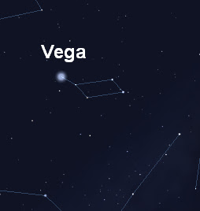

Vega

Vega tem um anel de poeira e gases a sua volta, o que na época de sua descoberta, nos anos 80, imaginou-se
ser um início de formação planetária, mas estudos mais recentes chegaram a conclusão de que mais
provavelmente se trata de detritos de massas celestes, devido exatamente a idade relativamente jovem
de Vega. Mesmo que ali
existam planetas, é pouco provável que exista vida neles, devido ao pouco tempo de formação da estrela.

Vega (α Lyr, α Lyrae, Alpha Lyrae), é a estrela mais brilhante da constelação de Lira e a
quinta estrela mais brilhante do céu noturno. Ela está separada do nosso sistema solar por 25 a
nos-luz, o que a torna uma das estrelas mais próximas do nosso Sol. Vega forma com Altair e Deneb o
chamado Triângulo de Verão. Vega foi provavelmente a primeira estrela a ser fotografada de forma bem
sucedida. A magnitude aparente de Vega é usada como referência para as demais, sendo essa magnitude
definida como zero. Há 14.000 anos Vega era a estrela Polar,
e será novamente dentro de 12.000 anos, desbancando a atual estrela Polaris da posição.